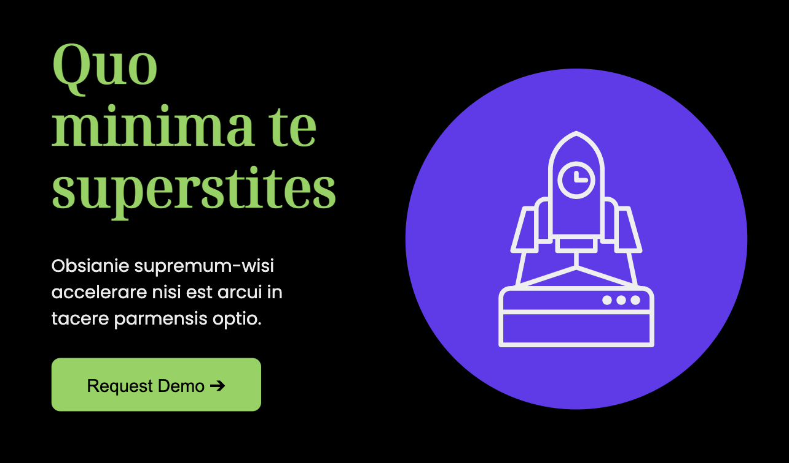
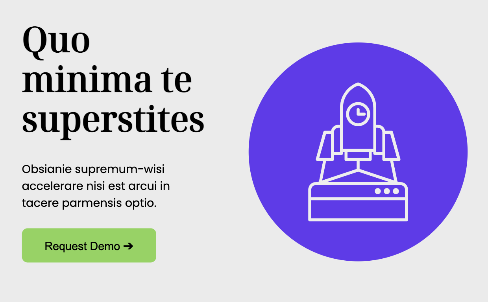
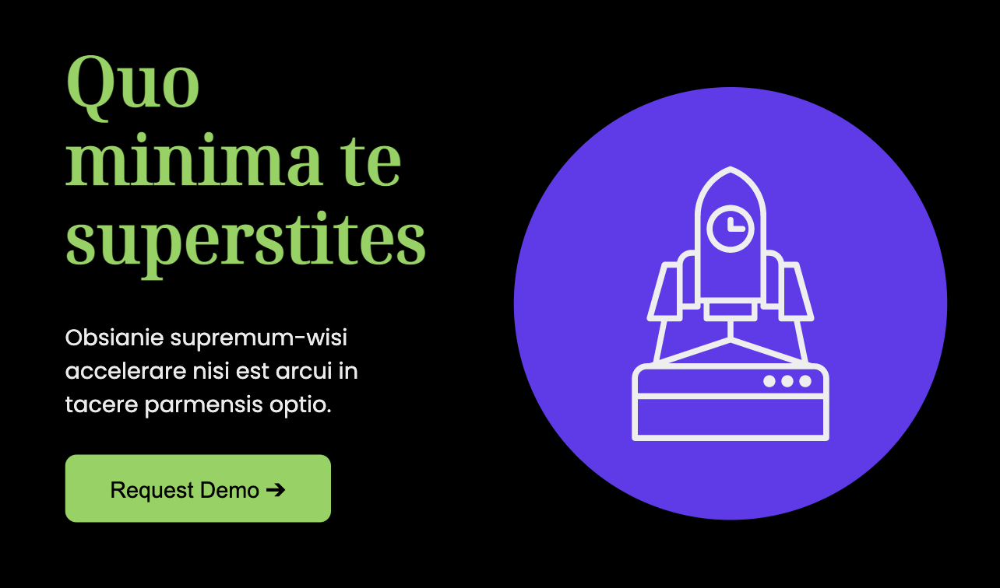
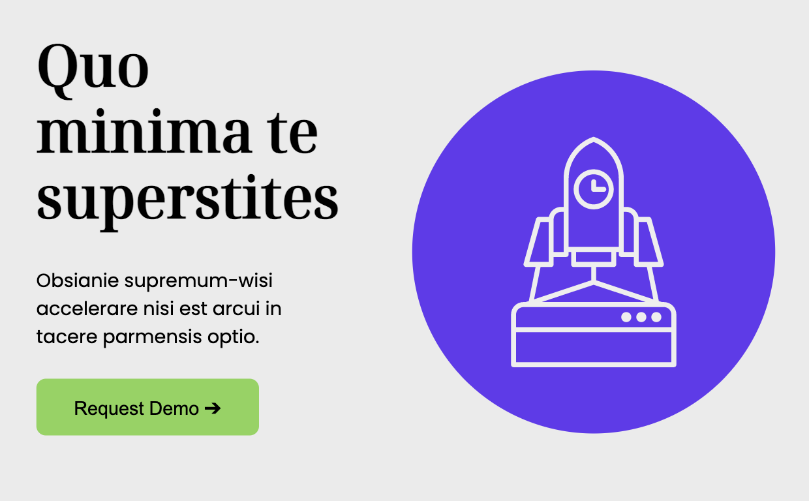

In this assignment we had to work with color schemes, dark and light modes, and animations from motion one. For this color scheme, I checked if the color contrast is acceptable before implementing it. Both the blue and green hues are bold but the green gets more attention in the dark mode. For the animations, I aimed to try something simple and seamless, I was mostly interested in inView and scroll, that’s why I ended with a classy fade-in.
Colors and Animation
 


